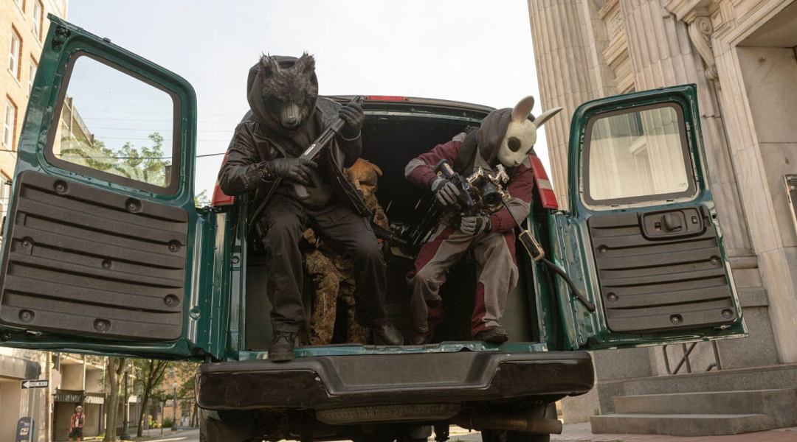

别人抢银行是东躲西藏、生怕被认出来，这帮人却把整个过程全球直播。
别人抢钱只想暴富，他们转头却把钱分给了需要的人。
2026年11月13日，亚马逊砸重金推出的动作惊悚片《带你抢银行》（How to Rob a Bank）正式北美公映。

导演则是大名鼎鼎的大卫·雷奇（《疾速追杀》《死侍2》《子弹列车》），主演是近年势头猛得吓人的尼古拉斯·霍尔特，搭档佐伊·克罗维兹、泽井杏奈、皮特·戴维森等一众实力派。光是这个阵容，就已经让人坐不住了。
故事设定更是大胆：一群劫匪不再像传统犯罪片那样蒙面跑路，而是戴着动物面具、开着直播，把每一次抢劫变成全网围观的"教学视频"。抢来的钱不放自己兜里，而是分给那些被系统抛弃的人。
从这个设定就能看出，它压根没打算拍一部传统意义的硬核抢银行片，而是把"劫富济贫的现代罗宾汉"和"流量时代的直播狂欢"缝在了一起。片中霍尔特戴狼头面具、穿警服的造型，也成了宣传物料里最抓眼球的画面。
一个脑洞大开的故事，刚点映就口碑两极，有人称它 “年度最大惊喜”，也有人吐槽内核空洞，争议直接拉满。
看好它的一派，把它捧为"今年最大的惊喜之一"。在一个续集、IP续命扎堆的影视圈里，一部原创设定、敢拿社会情绪开刀的犯罪片能让人眼前一亮，本身就是加分项。
但另一派并不买账。英国《卫报》的影评直接给了个耐人寻味的标题："亚马逊的反资本主义闹剧，远称不上狂欢"，评价尼古拉斯·霍尔特、泽井杏奈和皮特·戴维森演的这版罗宾汉"头脑简单、缺乏兴奋感"，认为它想同时承载社会评论和动作娱乐，结果两头都没做透。IMDb上的评分目前停在6.8（样本还很小，参考意义有限），也谈不上碾压。
一部电影能让"年度惊喜"和"远非狂欢"这两种评价同时出现，某种意义上来说，它真正抓到了这个时代的情绪痛点。当规则本身开始被质疑时，谁才是真正在"抢"的人？ 这个问题的答案，可能比片子本身更值得琢磨。